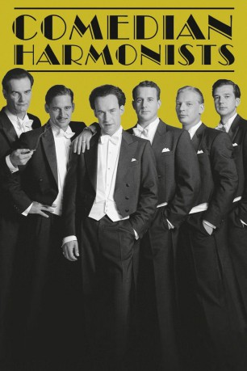

#6137 Comedian Harmonists
 
 IMDB-Wertung: 7.2 / 10
IMDB-Wertung: 7.2 / 10  Metascore: 0
Metascore: 0 
Berlin in den 30er Jahren. Sechs junge Männer gründen die erfolgreichste A-Capella Gruppe der Welt: Die Comedian Harmonists. Aus dem Nichts heraus erreichten die Freunde mit ihrer Musik gemeinsam das, was sie sich ein Leben lang erträumten. Wer kennt nicht ′Mein kleiner grüner Kaktus′?!!! Auch wenn das Ensemble nur ein paar Jahre lang bestand, gelang es ihm, eine einzigartige Musik zu schaffen, die sich bis heute größter Popularität erfreut. Eine Legende kehrt zurück...
Jahr: 1997
Dauer: 129 Minuten
FSK: 6
Land: Deutschland Studio: Senator FilmTonspuren:
Untertitel:
Auflösung: 1080p (1920x816) Größe: 10096 MB
Genre: Drama, Musik, Biographie
Regisseur: Joseph Vilsmaier
Drehbuch: Don Coscarelli
Soundtrack:
Darsteller:
 Ben Becker als Robert Biberti
Ben Becker als Robert Biberti Heino Ferch als Roman Cycowski
Heino Ferch als Roman Cycowski Ulrich Noethen als Harry Frommermann
Ulrich Noethen als Harry Frommermann Kai Wiesinger als Erwin Bootz
Kai Wiesinger als Erwin Bootz Katja Riemann als Mary Cycowski
Katja Riemann als Mary Cycowski- Dana Vávrová als Ursula Bootz
 Otto Sander als Bruno Levy
Otto Sander als Bruno Levy Jürgen Schornagel als Reich Music Director
Jürgen Schornagel als Reich Music Director- Rudolf Wessely als Herr Grunbaum
 Jochen Nickel als Hehler
Jochen Nickel als Hehler- Tina Bordihn als Leila
- Axel Harney als Sailor
- Susanne Hoss als Rosa
- Klaus Nierhoff als Polizist
 Johannes Silberschneider als Inspizient
Johannes Silberschneider als Inspizient Heinrich Schafmeister als Erich A. Collin
Heinrich Schafmeister als Erich A. Collin Max Tidof als Ari Leschnikoff
Max Tidof als Ari Leschnikoff Meret Becker als Erna Eggstein
Meret Becker als Erna Eggstein- Noemi Fischer als Chantal, Collin's Girlfriend
- Michaela Rosen als Ramona, the Madame
- Günter Lamprecht als Eric Charell
- Gérard Semaan als Roman's Father
 Rolf Hoppe als Gauleiter Streicher
Rolf Hoppe als Gauleiter Streicher- Susi Nicoletti als Frau Grunbaum
- Trude Ackermann als Bob's Mother
- Giora Feidman als Solo Clarinet
- Kathi Lindner als Garderobiere
- Babsy Artner als Robert Biberti's Girlfriend
- Thommi Baake als
- Anna Kathrin Bleuler als Lola
 Martin Brambach als
Martin Brambach als - Matthew Casazza als Trumpet Player, Band on Aircraft Carrier
- Michael Cesarano als Sailor
- Lance Girard als Polizist 2
- Bettina Hirschberg als Frau
- Jürgen Lill als
- Lukas Miko als Hans
- Veronika Neugebauer als Yvonne
- Mitchell Tolentino als Sailor
- Liv Tullia als Girl 1
Datei: X:\1997\Comedian Harmonists (1997, FSK6, 1920x816).mkv seit 05.05.2017
Festplatte: HD 1996-2002
 Es gibt insgesamt 83 Filme in der Gruppe '1997'
Es gibt insgesamt 83 Filme in der Gruppe '1997'